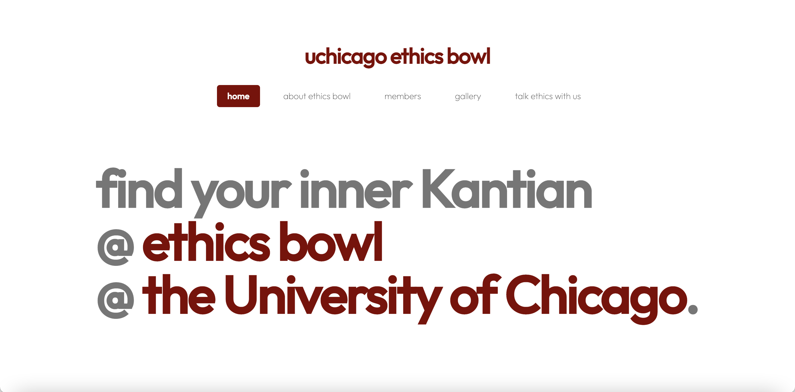

As the only CS major amongst our Ethics Bowl crew, I’ve been summoned to create our Ethics Bowl team website.
Below is a sneak peek at the current design:

Using my own custom HTML/CSS, I’m customizing the Dopetrope template from HTML5UP to suit our design needs. The color scheme consists of mainly UChicago brand colors.
I plan to incorporate more custom JavaScript or React Native to make the landing page more dynamic, e.g. cycling through different philosophers other than Kantians on the front page (Hegellians?).
Stay tuned for updates!